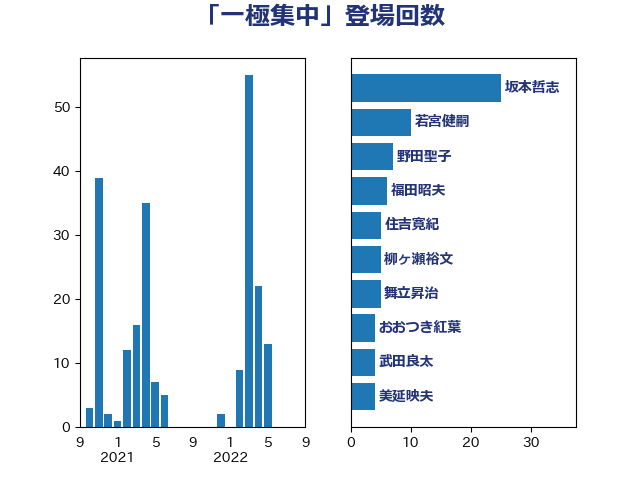

単語「一極集中」

| 坂本哲志 | 自由民主党 | 25 回 |
| 若宮健嗣 | 自由民主党 | 10 回 |
| 野田聖子 | 自由民主党 | 7 回 |
| 福田昭夫 | 立憲民主党 | 6 回 |
| 住吉寛紀 | 日本維新の会 | 5 回 |
| 柳ヶ瀬裕文 | 日本維新の会 | 5 回 |
| 舞立昇治 | 自由民主党 | 5 回 |
| おおつき紅葉 | 立憲民主党 | 4 回 |
| 武田良太 | 自由民主党 | 4 回 |
| 美延映夫 | 日本維新の会 | 4 回 |
| 谷田川元 | 立憲民主党 | 4 回 |
| 青木愛 | 立憲民主党 | 4 回 |
| 福島みずほ | 社会民主党 | 3 回 |
| 金子恭之 | 自由民主党 | 3 回 |
| 中村裕之 | 自由民主党 | 2 回 |
| 中西祐介 | 自由民主党 | 2 回 |
| 坂本祐之輔 | 立憲民主党 | 2 回 |
| 斉藤鉄夫 | 公明党 | 2 回 |
| 芳賀道也 | 国民民主党 | 2 回 |
| 菅義偉 | 自由民主党 | 2 回 |
| 藤井比早之 | 自由民主党 | 2 回 |
| 西岡秀子 | 国民民主党 | 2 回 |
| 赤羽一嘉 | 公明党 | 2 回 |
| 鈴木英敬 | 自由民主党 | 2 回 |
| 三ッ林裕巳 | 自由民主党 | 1 回 |
| 井上貴博 | 自由民主党 | 1 回 |
| 今枝宗一郎 | 自由民主党 | 1 回 |
| 伊東良孝 | 自由民主党 | 1 回 |
| 加田裕之 | 自由民主党 | 1 回 |
| 加藤鮎子 | 自由民主党 | 1 回 |
| 務台俊介 | 自由民主党 | 1 回 |
| 勝部賢志 | 立憲民主党 | 1 回 |
| 古川元久 | 国民民主党 | 1 回 |
| 吉川元 | 立憲民主党 | 1 回 |
| 堂故茂 | 自由民主党 | 1 回 |
| 宗清皇一 | 自由民主党 | 1 回 |
| 室井邦彦 | 日本維新の会 | 1 回 |
| 宮崎政久 | 自由民主党 | 1 回 |
| 山田勝彦 | 立憲民主党 | 1 回 |
| 山谷えり子 | 自由民主党 | 1 回 |
| 岩谷良平 | 日本維新の会 | 1 回 |
| 平井卓也 | 自由民主党 | 1 回 |
| 新妻秀規 | 公明党 | 1 回 |
| 新藤義孝 | 自由民主党 | 1 回 |
| 杉田水脈 | 自由民主党 | 1 回 |
| 枝野幸男 | 立憲民主党 | 1 回 |
| 梅村聡 | 日本維新の会 | 1 回 |
| 森本真治 | 立憲民主党 | 1 回 |
| 海江田万里 | 立憲民主党 | 1 回 |
| 渡辺猛之 | 自由民主党 | 1 回 |
| 熊谷裕人 | 立憲民主党 | 1 回 |
| 田島麻衣子 | 立憲民主党 | 1 回 |
| 田嶋要 | 立憲民主党 | 1 回 |
| 石井正弘 | 自由民主党 | 1 回 |
| 磯崎仁彦 | 自由民主党 | 1 回 |
| 笠井亮 | 日本共産党 | 1 回 |
| 若松謙維 | 公明党 | 1 回 |
| 菅家一郎 | 自由民主党 | 1 回 |
| 西村康稔 | 自由民主党 | 1 回 |
| 進藤金日子 | 自由民主党 | 1 回 |
| 野上浩太郎 | 自由民主党 | 1 回 |
| 金子恵美 | 立憲民主党 | 1 回 |
| 音喜多駿 | 日本維新の会 | 1 回 |
| 麻生太郎 | 自由民主党 | 1 回 |